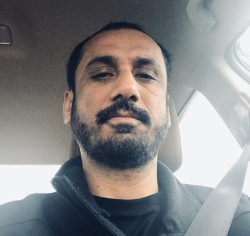

|  |
Munir ShahrbabakiIT Support Specialist Contact |
SUMMARY
Customer service focused.Technical Support Specialist with 15 years of career experience in help desk environments. Highly adeptin systems analysis, diagnostics, troubleshooting and conflict resolution. Exhibit excellent organizational and problem-solving skills. Works well in team environments and displays a strong work ethic.
| Technical Troubleshooting ⭐⭐⭐⭐⭐ | Hardware Configuration ⭐⭐⭐⭐⭐ |
| Critcial Thinking ⭐⭐⭐⭐⭐ | Customer Service ⭐⭐⭐⭐ |